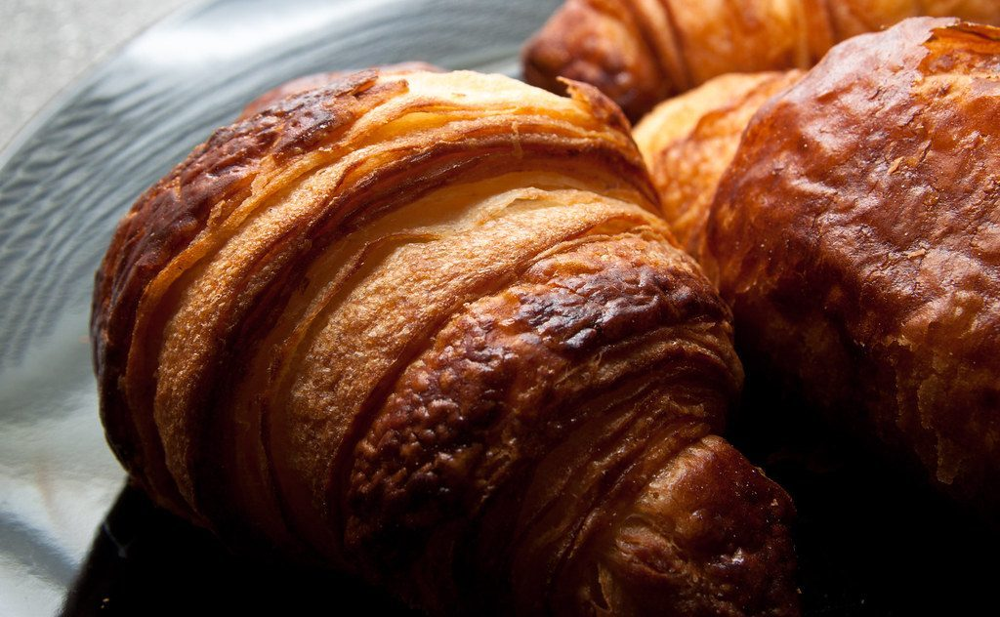

ベーカリー / 長野県塩尻市広丘野村
save room for desertMASTER
KEY
長野県塩尻市広丘野村にあるベーカリー「save room for desert MASTER KEY」のご案内ページです。営業時間やメニューなど、詳しいことは準備中。電話とInstagramで確認できています。

制作側の連想
「MASTER KEY」から、鍵の歯形を思い浮かべて
店名の由来は分かりません。制作側は「MASTER KEY」という言葉から、鍵の切り込みの深さが並んだ歯形を連想し、このサイトを「歯の深さ1〜5」の見立てで組んでいます。店名の綴りは、お店の表記のまま掲載しています。この連想は、制作側のもので、お店の理念・由来とは無関係です。
歯の深さ 3・1・4・2・5
5つの歯を、段違いに並べて。
写真は国外・撮影地不明のフリー素材で、お店や商品の写真ではありません。段差は、鍵の歯の深さ(数字)にあわせています。
- 歯1深さ 3

クロワッサンの層 - 歯2深さ 1

粉の渦と切れ目 - 歯3深さ 4

ライ麦パンのいろいろ - 歯4深さ 2

丸いパン - 歯5深さ 5

積まれたクロワッサン
鍵穴
お店のこと(確認できたものだけ)
| 所在地 | 〒399-0702 長野県塩尻市広丘野村３００４ |
|---|---|
| 電話 | 0263-75-2134 |
| 営業時間 | 準備中 |
| 定休日 | 準備中 |
| ご予約 | 準備中 |
| 駐車場 | 準備中 |
| SNS | Instagram @sr4d.masterkey |